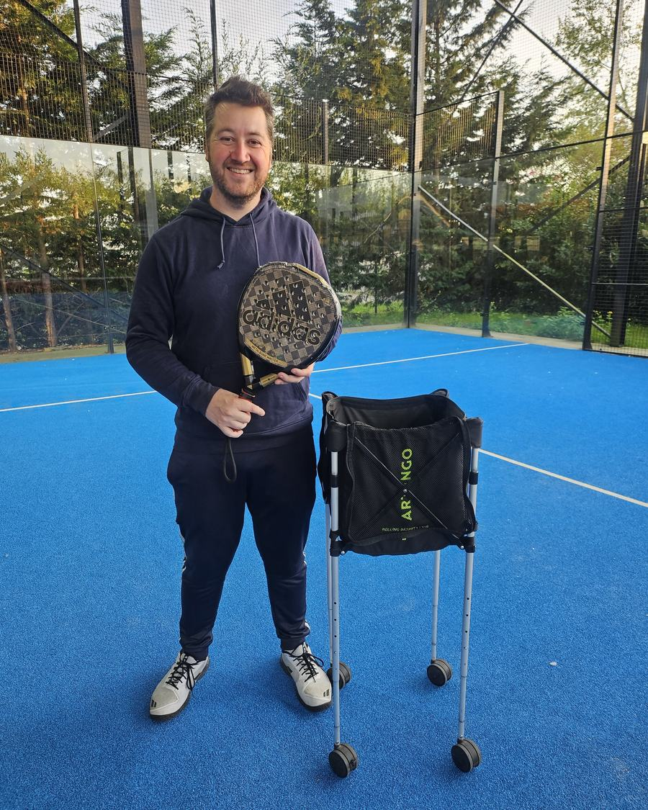
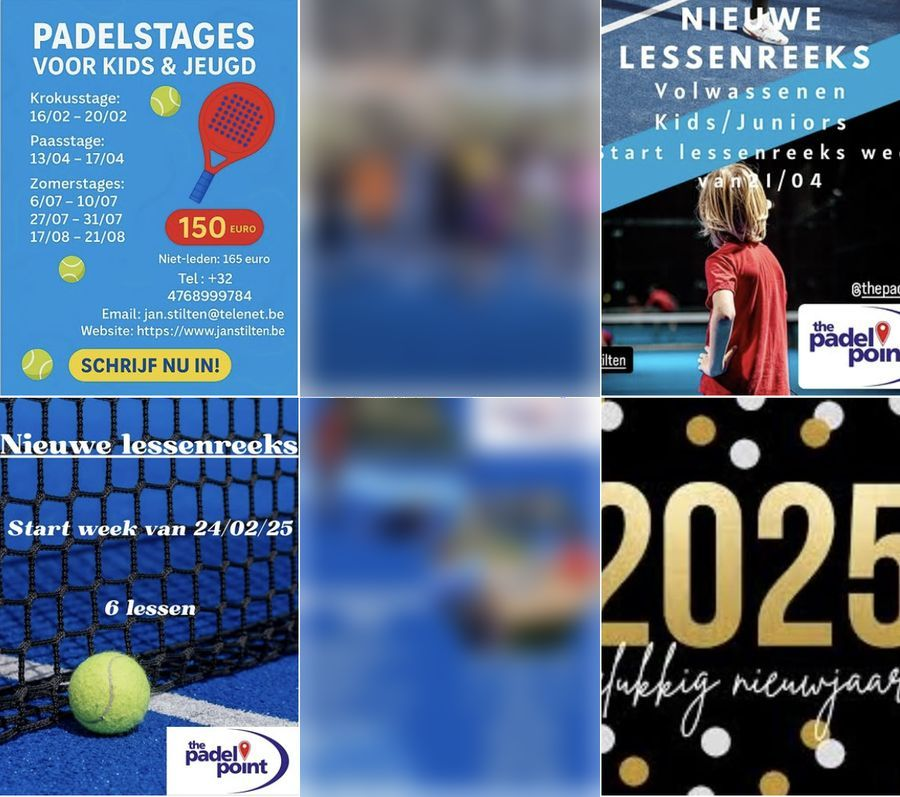
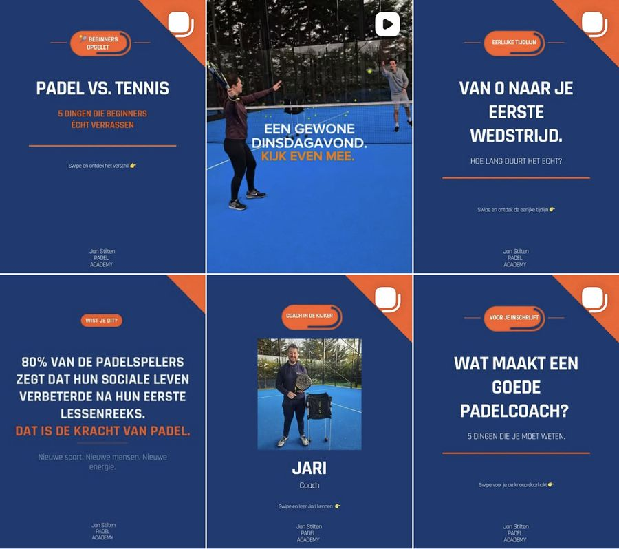
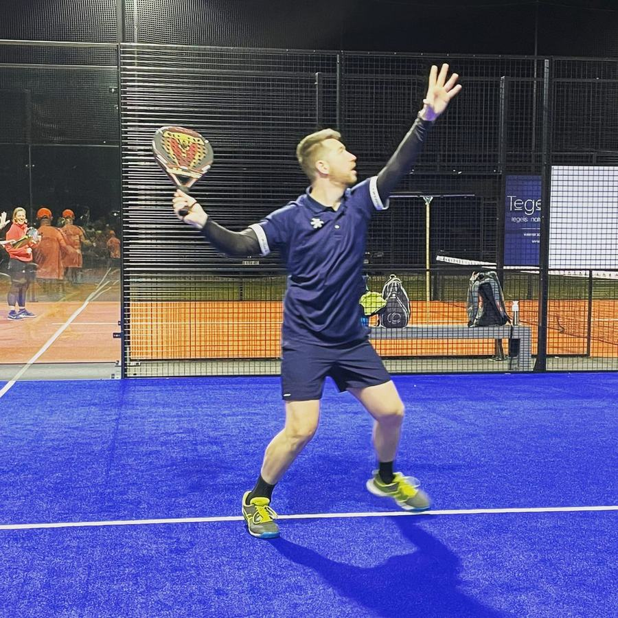

Ik maak de Instagram van tennis- en padelclubs
Ik ben Jari, al vijf jaar padeltrainer. Je stuurt me foto's en filmpjes van wat er op je club gebeurt. Ik maak er posts en reels van en zet ze online zodra jij ze goedgekeurd hebt.

Zo ging het bij Jan Stilten Padel Academy
Jan geeft les in SGW Sportcentrum De Reep en The Padel Point. Op zijn Instagram stonden vooral affiches voor nieuwe lessenreeksen, elk in een andere stijl. Wie de academy niet kende, kon daar weinig uit afleiden.
Ik heb vooral getoond hoe een les er echt uitziet. Er kwamen carrousels voor beginners, zoals "Padel vs. tennis" en "Van 0 naar je eerste wedstrijd", een reel van een gewone dinsdagavond en een reeks waarin de coaches zich voorstellen.
Na 6 weken stonden er 12 posts online. Samen bereikten ze 3.367 mensen en haalden ze 5.154 weergaven, zonder dat Jan één euro aan advertenties uitgaf. De maandagsles zat intussen bijna vol.
"Ik ben coach en lesgever. Social media is niet mijn ding. Jari heeft onze Instagram van nul opgebouwd. In 6 weken bereikten we meer dan 3.300 mensen en zat onze maandagsles bijna vol. Ik hoef er zelf niets aan te doen. Hij begrijpt de sport en onze cursisten, en dat merk je."



Wie ik ben
Als kind voetbalde ik bij de jeugd van Sporting Lokeren. Later kwamen basket en, in de zomer, tennis erbij. Mijn knie heeft dat niet goed verdragen: vier operaties in vier jaar.
Padel leerde ik kennen toen bijna niemand hier het speelde. Het bleef niet bij zelf spelen: sinds vijf jaar geef ik ook training, nu bij Jan Stilten Padel Academy.
Als trainer sta ik elke week op een club. Ik zie de volle terreinen en de spelers die na hun les nog aan de bar blijven hangen. Op de Instagram van diezelfde club staat dan een affiche van drie weken oud. Dat vond ik zonde, en zo is SportGrowth Media begonnen.
Hoe we beginnen
- We maken kennis, op je club of online. Reken op een uur. Ik wil weten wie je leden zijn en wie je er nog bij wil.
- Ik maak een plan voor de eerste maanden: welke posts, op welke dagen en wat er in jullie seizoen op de planning staat.
- Jij stuurt me foto's en filmpjes. Een gsm is genoeg, ik zeg je wat je best filmt. Wil je dat ik zelf kom filmen, dan kan dat tegen meerprijs.
- Je krijgt elke post eerst te zien. Pas als jij akkoord bent, gaat hij online.
- Ik plan alles in en hou bij hoe elke post het doet. Elke maand bekijken we samen wat werkte. Vanaf Starter krijg je daar een rapport met je cijfers bij.
Iets dringends, zoals een uitslag of een evenement dat verschuift? Bel of mail me. Vanaf Starter mag je ook gewoon een WhatsApp sturen.
Wat het kost
Een vaste prijs per maand. De huisstijl, teksten, hashtags en het inplannen zitten in elk pakket. Filmen of fotograferen ter plaatse reken ik apart.
Mini
€249 per maand
6 posts per maand en 3 keer per week stories. Eén keer per maand overlopen we samen hoe het gaat.
De eerste 3 maanden vast, daarna maandelijks opzegbaar.
Starter
€399 per maand
10 posts en 1 reel per maand, 5 keer per week stories. Elke maand een rapport met je cijfers, en je kan me rechtstreeks via WhatsApp bereiken.
Minimum 3 maanden.
Growth
€599 per maand
16 posts en 3 reels per maand, elke dag stories. Een uitgebreid maandrapport, elk kwartaal een nieuwe strategie en voorrang via WhatsApp.
Minimum 6 maanden.
Heeft je club tennis en padel, of fitness en padel? Dan komt er €50 tot €80 per maand bij, afhankelijk van de club. Weet je niet goed welk pakket past, vraag dan eerst de gratis analyse aan.
Vragen
Werk je ook voor clubs verder weg?
Ja. Waar je club ligt, maakt niet uit. We overleggen online of aan de telefoon en jij stuurt beeld door. Wil je dat ik kom filmen, dan bekijken we samen wat dat kost.
Werk je ook voor tennisclubs?
Ja. Ik heb zelf jaren tennis gespeeld. Een tennisclub heeft net zo goed zijn interclub, lessen en tornooien, en daar valt genoeg over te vertellen.
Moeten wij zelf foto's en video's maken?
Ja, jullie sturen het beeld door. Ik zeg je precies wat je best filmt en fotografeert. Heb je daar geen tijd voor, dan kan ik tegen meerprijs zelf komen filmen.
Hoeveel werk is het voor ons?
Beeld doorsturen en de posts goedkeuren. Het plan, de teksten, de vormgeving en het inplannen doe ik.
Kunnen we opzeggen?
Mini is na de eerste 3 maanden maandelijks opzegbaar. Voor Starter geldt een minimum van 3 maanden, voor Growth 6 maanden.
Wat houdt de gratis analyse in?
Ik bekijk de Instagram van je club en neem daar een korte video over op. Je krijgt een score op 100, de grootste verbeterpunten en één ding dat je nog dezelfde dag kan aanpassen. Je zit nergens aan vast.
Waar staat jouw club?
Stuur me de Instagram van je club. Binnen 48 uur krijg je een korte video met een score op 100 en de punten waar je het meest mee wint. Gratis.
- WhatsAppStuur me een bericht
- Bellen0479 25 31 13
- Mailjari@sportgrowthmedia.be
- InstagramStuur AUDIT naar @sportgrowth_media